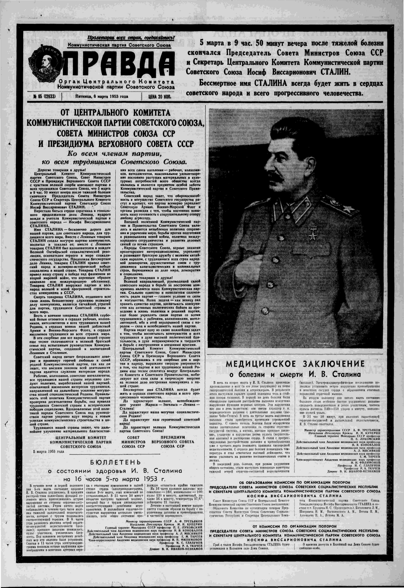
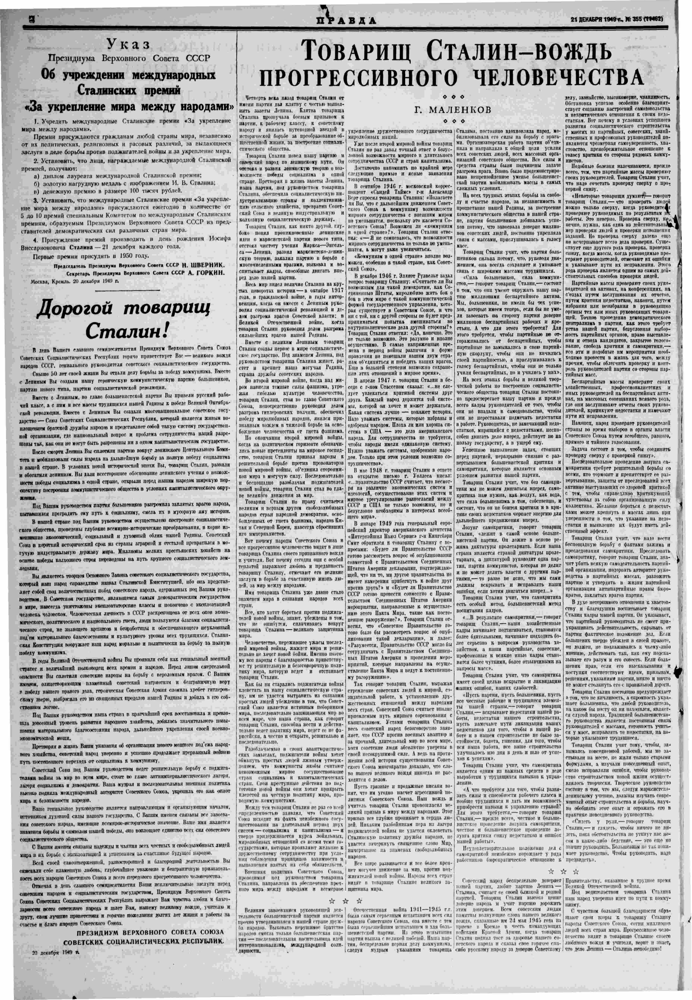
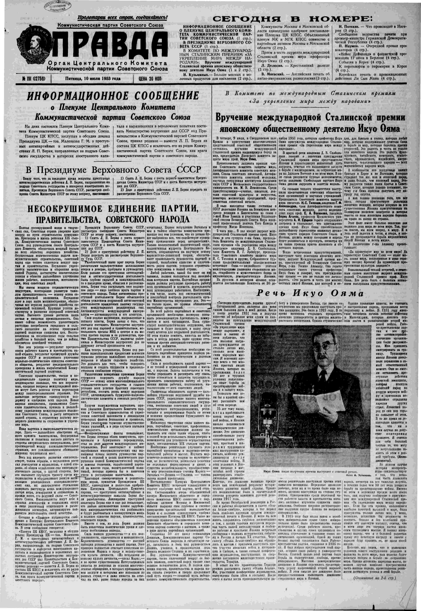
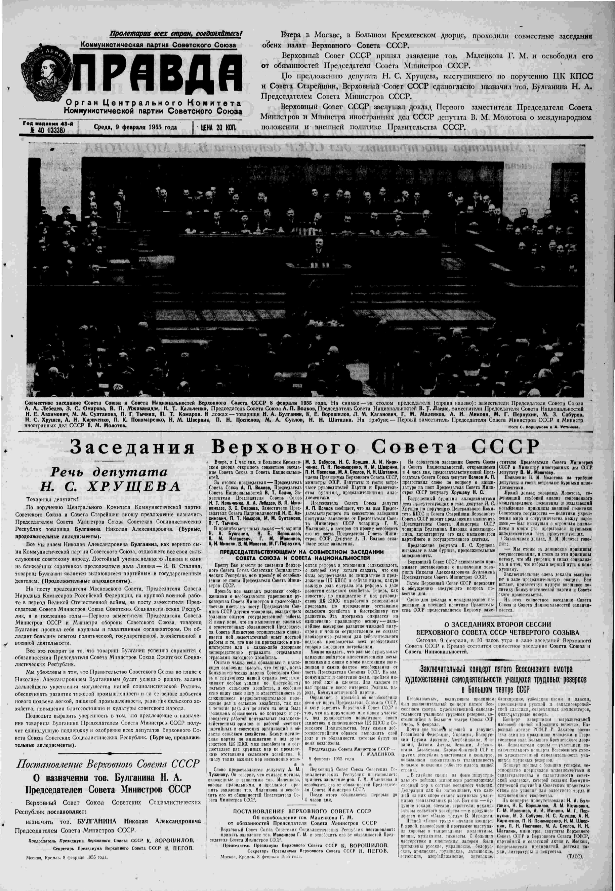
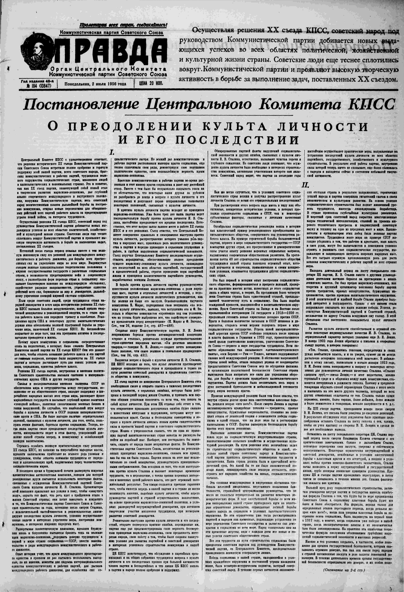
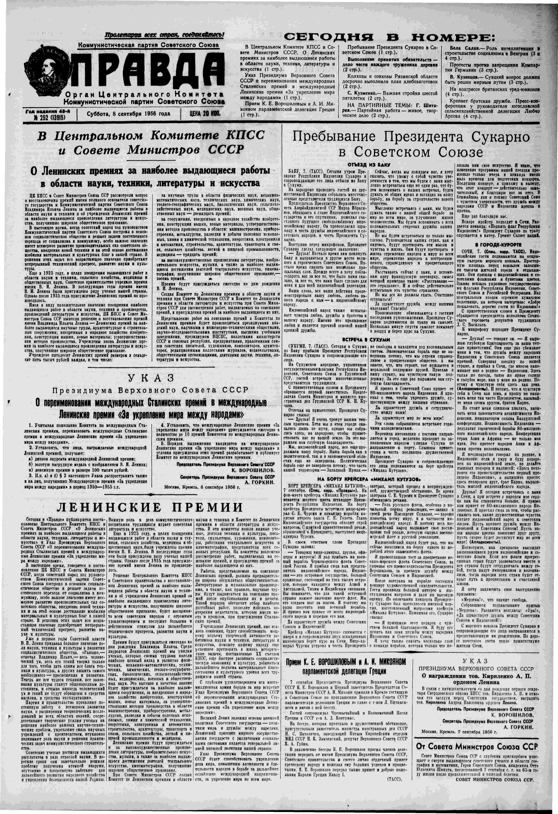
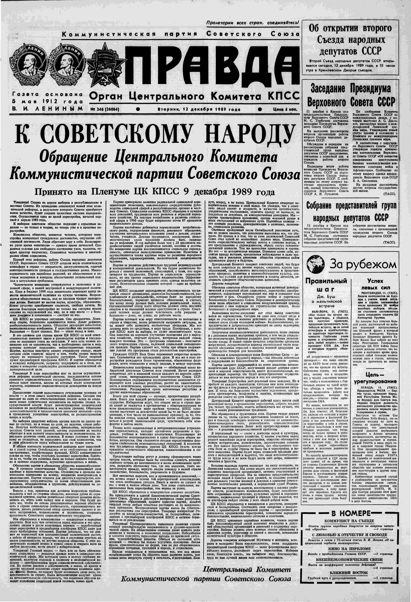

Front page of Pravda announcing the death of J. V. Stalin, including the medical report. Scan of the issue: Pravda, 6 March 1953, no. 65 (12633), page 1.
For forty years, from 1950 to 1990, the Soviet Union awarded a peace prize of its own. It ended with the state that gave it.
Peace prizes are awarded by many kinds of institutions. Governments give them, and so do religious organizations, universities, and private foundations. Some are known around the world, and some are known mainly to the people who receive them. Some last only a few years and then disappear. Others are still awarded decades after they were founded. Each prize works from its own definition of peace and of peacebuilding, and each awarding committee judges by its own standards and its own biases. The prize followed here is one of the long ones that later closed.

Decree
of the Presidium of the Supreme Soviet of the USSR
On the establishment of the international
Stalin Prizes
"For strengthening peace among the peoples"
1. Establish the international Stalin Prizes "For strengthening peace among the peoples."
The prizes are awarded to citizens of any country in the world, regardless of political, religious, and racial differences, for outstanding service in the struggle against the instigators of war and for the strengthening of peace.
2. Establish that persons awarded the international Stalin Prize receive:
- a) a diploma of laureate of the international Stalin Prize;
- b) a gold breast medal with a portrait of J. V. Stalin;
- c) a cash prize of 100,000 rubles.
3. Establish that the international Stalin Prizes "For strengthening peace among the peoples" are awarded each year, from 5 to 10 prizes, by a special Committee for the International Stalin Prizes, formed by the Presidium of the Supreme Soviet of the USSR from representatives of the democratic forces of various countries of the world.
4. Award the prizes on the birthday of Joseph Vissarionovich Stalin - 21 December of each year.
Award the first prizes in 1950.
The International Lenin Prize for Strengthening Peace Among Peoples (until 1955: International Stalin Prize for Strengthening Peace Among Peoples) was established on December 20, 1949, by the Presidium of the Supreme Soviet of the USSR on the occasion of Joseph Stalin's seventieth birthday. It was awarded annually in Moscow to up to ten people.
The award was considered the Soviet Union's answer to the Nobel Peace Prize and was bestowed by an international prize committee. Usually, several people were honored at a time. The chairman of the prize committee was the physicist Dmitri Skobelzyn from 1950 to 1973, followed by the oncologist Nikolai Blokhin until 1987, and finally, after the prize was restructured in 1989, the welding engineer Borys Paton.
In the course of de-Stalinization, the name was changed by decree of the Presidium of the Supreme Soviet on September 6, 1956, to the International Lenin Prize for Strengthening Peace Among Peoples (Russian: Международная Ленинская премия «За укрепление мира между народами»). All previous laureates were asked to return their medals for exchange. Subsequently, the announcement of the laureates no longer took place on Stalin's birthday in December, but usually on May 1.
On December 11, 1989, the Supreme Soviet reorganized the awarding of the prize. It was to be awarded every two years; the recipient(s) were to be announced on Lenin's birthday, April 22. Only one more prize was awarded under the new rules until the dissolution of the Soviet Union in 1991.
The prize's founding document declared it to be an award for people who contributed to strengthening peace and fought against warmongers. It claimed to be free from political, religious, racial, or other biases. However, as multiple “fires” kept flaring up across various theaters of the global standoff popularized under the name of the Cold War, the Capitalist bloc came to frame the Soviet peace prize as an instrument of ideological influence from the Communist bloc. Unambiguous affiliation—the Soviet legislative branch established it and selected the international committee to discuss the nominations—with the leading player of the rival camp didn't ease the hostility. Notably, a very similar distrust existed on the other side of the “Iron Curtain” regarding the West’s own premier award, the Nobel Peace Prize.
The decree of 1949 assigns the prize to citizens of any country for the struggle against the instigators of war. The clouds show the kind of public life those people brought into the list.
Of the 167 people, 67 are classed as politicians and 50 as cultural figures. Together they are most of the list. There are 15 scientists, 18 public figures, 10 religious figures, and 7 labor-movement figures. Twenty-nine are women. Thirteen of the women are in the political cloud, and eight are public figures. The cultural cloud holds four women. The religious cloud and the labor cloud hold none.
Each cloud is one class from WINNER_BIO_occupation_class. Women are drawn toward the center of their cloud. Source: laureates.csv.
The decree of 1949 promised five to ten prizes a year. The columns keep that promise only at the start.
From 1950 through 1955 there are six full years and 45 people. The shortest of those columns has six, and in 1953 the column reaches ten, the ceiling the decree set for itself. From 1956 the prize goes on, but the columns sit lower, often at four or five, and from the late 1960s a cohort often covers two years. The span 1980-1982 covers three. There are thirty cohorts in all. Two of them, 1988 and 1990, are a single person. The list has no cohort of its own for 1987 or for 1989.
Women are in the prize from the first year: three of the seven in 1950. After that, whole years pass without them. They stand thickest in the 1977-1978 cohort, four of six. Among the Stalin-year laureates, 10 of 45 are women. Among the later laureates, 19 of 122.
Each column is one prize cohort, placed at the middle of the year or span in the decree. Women are drawn at the foot of the column. The Stalin Prize runs through 1955; from 1956 the prize is the Lenin Prize, and 1990 is the single Lenin Peace Prize. Source: laureates.csv.
Each open square sits at the year named in the decree (META_prize_year). The filled circle is the announcement or decision day (META_announced_date). A short tick beside the circle marks the Pravda issue date (META_pravda_date) when that day is different. The line is the wait between the named year and the announcement. Stalin prizes for 1951-1955 were announced in December of that year; the 1950 prize came in April 1951; Lenin prizes usually around 1 May for the previous year or span. One 1983-1984 name (Florakis) is dated earlier than the rest of that cohort; 1988 has no recorded announcement day. Source: laureates.csv.
On the chart, 1956 is not an empty year. That cohort has eight people, and the list already counts them as Lenin laureates. Between Stalin’s death and the renaming there are about three years of Pravda — on the order of a thousand issues. The carousel opens on the death announcement and then on ordinary front pages of a party struggle already under way: a crisis of leadership, and conflicting views and strategic plans in politics and the economy. The pattern is familiar — not a repeat, but a rhyme: like the Second Triumvirate after Caesar’s death (Octavian, Antony, Lepidus), or the Thermidorian Reaction in France after Robespierre’s execution. History doesn't repeat itself, but it often rhymes. Most of that carousel is noise for this story. Two frames matter: on 2 July 1956 the paper prints the Central Committee resolution “On overcoming the cult of personality and its consequences”; in September the prize changes its name, and the portrait on the medal.
The renaming decree is dated 6 September 1956. It does not found a new prize, and it does not close the old one. The first sentence explains the renaming by the wishes of the committees. The sum does not change: still 100,000 rubles. Point 3 extends to the laureates of 1950-1955 only the diploma and the medal, subparagraphs (a) and (b), and does not extend the cash. Those earlier laureates, as the text above has already said, were asked to hand the medal back for exchange: the old one bears Stalin, the new one bears Lenin. The decree still says each year, and up to ten. No column after 1953 reaches ten.

Front page of Pravda announcing the death of J. V. Stalin, including the medical report. Scan of the issue: Pravda, 6 March 1953, no. 65 (12633), page 1.

Front page of Pravda with the Central Committee report and the Presidium decree removing L. P. Beria. Scan of the issue: Pravda, 10 July 1953, no. 191 (12759), page 1.

Front page of Pravda with the Supreme Soviet session that accepted G. M. Malenkov’s resignation as Chairman of the Council of Ministers. Scan of the issue: Pravda, 9 February 1955, no. 40 (13338), page 1.

Front page of Pravda with the Central Committee resolution on overcoming the cult of personality. Scan of the issue: Pravda, 2 July 1956, no. 184 (13847), page 1.

Decree
of the Presidium of the Supreme Soviet of the USSR
On renaming the international
Stalin Prizes
as the international Lenin Prizes
"For strengthening peace among the peoples"
1. Taking into account the wishes of the Committees for the International Stalin Prizes,1 rename the international Stalin Prizes as the international Lenin Prizes "For strengthening peace among the peoples."
2. Establish that persons awarded the international Lenin Prize receive:
- a) a diploma of laureate of the international Lenin Prize;
- b) a gold breast medal with a portrait of V. I. Lenin;
- c) a cash prize of 100,000 rubles.
3. Extend subparagraphs (a) and (b) of § 2 of this Decree also to persons who received the International Prize "For strengthening peace among the peoples" in 1950-1955.
4. Establish that the international Lenin Prizes "For strengthening peace among the peoples" are awarded each year, up to 10 prizes, by the Committee for the International Lenin Prizes.
5. The procedure for nominating candidates for the international Lenin Prizes "For strengthening peace among the peoples," and the conditions for awarding these prizes, are drawn up and published by the Committee for the International Lenin Prizes.
1 They were established by the Decree of the Presidium of the Supreme Soviet of the USSR of 20 December 1949 (Vedomosti of the Supreme Soviet of the USSR, 1949, no. 66).
The picture is a page of Pravda with the printed decree renaming the prize. Scan of the issue: Pravda, 8 September 1956, no. 252 (13915), page 1.
The decree speaks of outstanding service. On the age chart that service belongs to a long public life. The mean sits near sixty, and the dashed line stands about there. Only eight people were under forty. Eighteen were seventy-five or older. The mass of the list lies between those edges: 76 people from 40 to 59, and 65 from 60 to 74.
The women are a little younger than the men on average, about 57 against about 61. The gap is small. In this too the prize reads as a list of public lives already made. The youngest and the oldest are named in the line under this paragraph. The empty left end of the scale matters more than the extreme.
By late 1989 the country was already deep in perestroika: shortages, political instability, a growing internal crisis. Against that noise a second renaming of a peace prize was a small act. The resolution below is dated 11 December 1989. It does not found a new prize, and it does not close the old one. It shortens the name to the International Lenin Peace Prize, and it replaces the statute and the committee rules. The prize itself was already slipping toward the far edge of the story.
The opening sentence explains the change by the present stage of the movement for human survival, a nuclear-free and nonviolent world, and new political thinking. Point 1 is the rename. Points 2 and 3 approve the new statute and the new committee regulations. Point 4 repeals earlier acts, including the renaming decree of 6 September 1956 as later amended. Only one prize was given under the new name: Mandela, for 1990. The Union dissolved the next year.

Resolution
of the Presidium of the Supreme Soviet of the USSR
of 11 December 1989, No. 905-1
On the International Lenin Peace Prize
Having considered the proposal of the Committee of the Supreme Soviet of the USSR on International Affairs on transforming the International Lenin Prize "For strengthening peace among the peoples" and improving the practice of its awarding in light of the present stage of the movement of broad public forces for the survival of humanity, the building of a nuclear-free and nonviolent world, and the establishment in international affairs of new political thinking, the Presidium of the Supreme Soviet of the USSR resolves:
1. Consider it expedient henceforth to name the International Lenin Prize "For strengthening peace among the peoples" the International Lenin Peace Prize.
2. Approve the Statute of the International Lenin Peace Prize.
3. Approve the Regulations on the Committee for the International Lenin Peace Prizes.
4. Consider as no longer in force:
- the Decree of the Presidium of the Supreme Soviet of the USSR of 6 September 1956 "On the international Lenin Prizes 'For strengthening peace among the peoples'" as amended by the Decrees of 15 February 1980 and 26 November 1986;
- the Decree of the Presidium of the Supreme Soviet of the USSR of 22 April 1957 "On the approval of the diploma and the gold breast medal of a laureate of the International Lenin Prize 'For strengthening peace among the peoples'" as amended by the Decree of 15 February 1980;
- the Resolution of the Presidium of the Supreme Soviet of the USSR of 22 April 1966 "On the Committee for the international Lenin Prizes 'For strengthening peace among the peoples'" as amended by the Decrees of 15 February 1980 and 26 November 1986.
The same decree says: citizens of any country, with no regard to political, religious, and racial differences. The map tests the geography in that sentence. It does not test the rest. Birth is not citizenship, and it is not the country that put a person forward. A prize that was a domestic honor of the Soviet Union would have piled its births up there.
The births pile up elsewhere. The largest numbers on record are France, 13, then Germany, 12, the United States, 9, and India, 7. Germany is one label in the file, with East and West not split. Russia and Ukraine together account for eight births. No other Soviet republic appears as a birth country. More than fifty birth countries are named, so the list is wide. Every recorded birth has coordinates on the map. The world of this prize is mostly a world of people born outside the state that signed it.